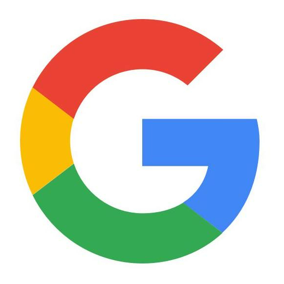

Here on MS Socials we try to keep our services as versatile and personalized as possible. Thus, we offer marketing for several platforms other than Facebook to be able to adapt to your needs. Here are some other social platforms we work with.
Here on MS Socials we try to keep our services as versatile and personalized as possible. Thus, we offer marketing for several platforms other than Facebook to be able to adapt to your needs. Here are some other social platforms we work with.
Facebook is a powerful platform for reaching potential clients due to its extensive user base and highly targeted advertising options. With Facebook Ads, businesses can create tailored campaigns to reach specific demographics, interests, and behaviors, maximizing the effectiveness of their marketing efforts.
Instagram offers a visually appealing platform for businesses to showcase their products or services through photos and videos. With its emphasis on visual storytelling and influencer marketing, businesses can engage with their audience in a creative and authentic way, fostering brand awareness and loyalty.
Google 
Google Ads enables businesses to reach potential clients through targeted search and display advertising. With Google's vast network, businesses can appear in search results, on relevant websites, and across various Google platforms, ensuring maximum visibility and driving qualified leads to their website or landing page.
Youtube
YouTube provides businesses with a platform to share engaging video content with a vast audience. Whether it's product demonstrations, tutorials, or brand storytelling, YouTube allows businesses to connect with consumers on a personal level, driving brand engagement and increasing visibility.
Twitter offers a real-time, conversational platform for businesses to engage with their audience and stay updated on trending topics. With its fast-paced nature and character limit, businesses can share quick updates, promotions, and engage in meaningful conversations with customers, enhancing brand awareness and customer satisfaction.